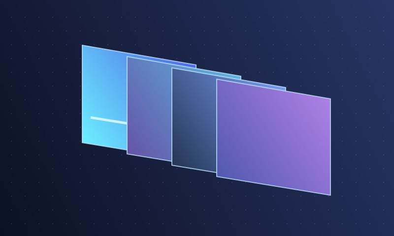

LCD panels
An LCD uses a backlight. Liquid crystals and polarizers control how much light passes through, and color filters give the image its colors.

Types of LCD panels
| Type | Typical advantages | Typical drawbacks |
|---|---|---|
| IPS | Stable colors and wide viewing angles | Lower native contrast than many VA panels |
| VA | High native contrast and deep blacks | Some models show trailing when switching between dark shades |
| TN | Pixels change shades quickly on many models | Narrower viewing angles with color shifts when viewed from the side |
A monitor with an LED backlight is an LCD. Mini-LED uses smaller diodes, which allows supported models to dim individual areas of the screen.